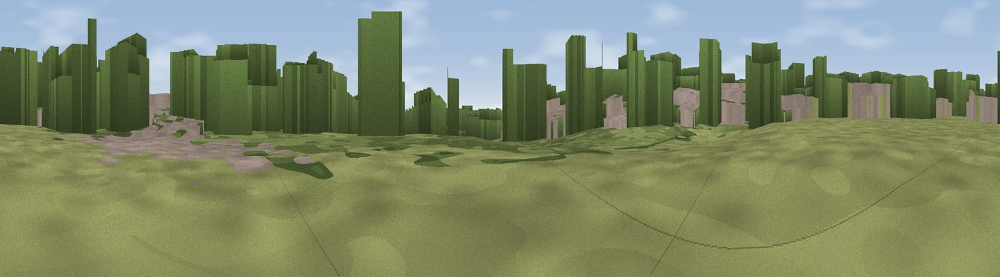

Mill Mound
#43249 in England · top 31% of its area beats it · near Ely · path 117 mWhere it is
The exact computed spot (TL 54853 80807). Click the marker for map links.
Public access: the nearest public right of way is about 117 m away — the final stretch may cross private land. Computed from Natural England's CRoW access layer and OpenStreetMap rights of way — not the legal definitive map. Always verify locally.
The view, rendered

A 360° render of this exact spot computed from the terrain model, tree cover and land cover — summer colours, afternoon light, calibrated against photographs of famous viewpoints. Real trees, hedges and buildings will differ in detail.
The panorama
Grey silhouette: terrain skyline in each direction (720 bearings, Earth curvature and refraction included). Dashed green: skyline with trees (+15 m) and buildings (+8 m) as obstacles. Blue strip: how far the ground is visible on each bearing.
Where the view opens
Wedge length = distance to the farthest visible ground on that bearing (vegetation-aware). Rings at 10, 25 and 50 km.
What fills the view
34% woodland · 24% grassland · 22% cropland · 19% built-up ·
Angular shares of the visible panorama (visual magnitude), not map area. Landscape diversity 0.61 (0–1 Shannon).
Key numbers
More beautiful places nearby
The staircase of upgrades: each row has a higher view potential than everything closer. Driving times are estimates from straight-line distance, calibrated against real road routing — check an actual route before setting out.
| Place | Direction | Drive | Score |
|---|---|---|---|
| Viewpoint near Little Downham | NW · 4 km | ~9 min | 21.5 |
| Haddenham village | WSW · 10 km | ~19 min | 22.5 |
| Viewpoint near Teversham | SSW · 26 km | ~42 min | 35.7 |
| Cambridge high point | SSW · 27 km | ~43 min | 43.6 |
| Viewpoint near Stapleford | SSW · 29 km | ~45 min | 52.9 |
| Viewpoint near Royston | SSW · 46 km | ~66 min | 56.6 |
| Viewpoint near Hexton | SW · 66 km | ~89 min | 65.4 |
| Viewpoint near Weybourne | NE · 83 km | ~107 min | 68.3 |
52.40336, 0.27485 · source: osm peak · position refined by local search. Computed location — check access rights before visiting.